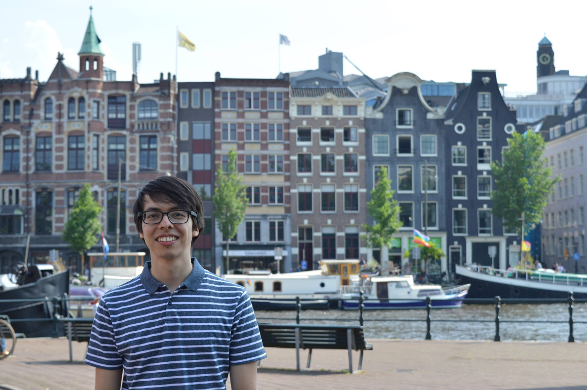

I am a first year PhD student at Vrije Universiteit Amsterdam and the University of Amsterdam. I am interested in teaching machines to discover entities and relations in data, assisted by and improving upon background knowledge.
I received an MSc degree in Artificial Intelligence from the University of Amsterdam. In my master's thesis I studied the problem of unsupervised representation learning for graphs, under the supervision of Thomas Kipf.
In 2017 I created Drumate, an Android app for drummers that uses procedural generation of practice patterns, that as of today has about 100k downloads.
I share some of the things I learn here in the form of blog posts. Feel free to visit the Writing section!